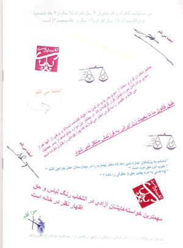
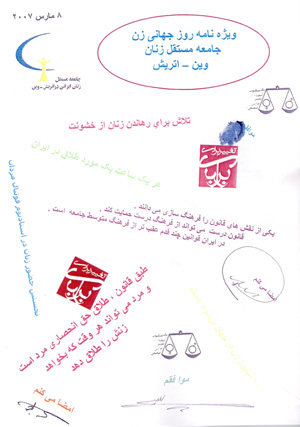
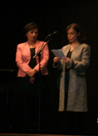
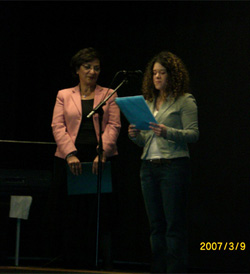
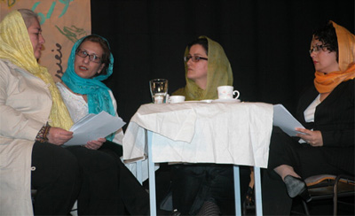
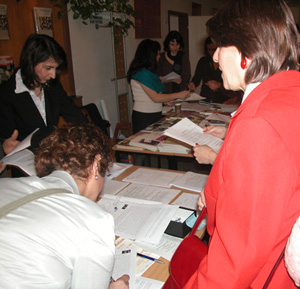

|
|

معرفی کمپین یک میلیون امضاء درجشن روز جهانی زن در وین
پریسا انصاری
سه شنبه21 فروردین 1386
جامعه مستقل زنان ایرانی مقیم اتریش- وین باردیگر موفق گردید تا با برگزاری بزرگداشت هشت مارس و نیز انتشار ویژه نامه ی از این موقعیت سود جسته ، با پرداختن به زنان، مسائل آنان ، مبارزات آنان و موفقیت ها و مشکلاتی که با آن روبرو هستند؛ این حقیقت بزرگ را یادآور گردد که زنان راه طولانی را پشت سر گذارده اند؛ راهی پر سنگلاخ و پر فراز و نشیب، و در این میان آنچه که به دست آمده پر ارزش، امّا نه سزاوار خلقت انسانی و موجودیت آنان است.

در جريانِ تدارکِ برگزاریِ جشن ۸ مارس‚ جامعه مستقل زنان ایرانی مقیم اتریش ‚ که از کارزار یک میلیون امضا بدلیل شیوه نامتمرکز‚ ساختار انعطاف پذیر و سیال و به ویژه نقش آگاهی دهنده اش پشتیبانی میکند‚ تصمیم گرفت تم اصلی جشن امسال را ” کمپین یک ميليون امضا “ انتخاب کند و ویژه نامه امسال خود را به معرفی این کارزار اختصاص داد. با این امید که ” با ثبت هر جشن کوچکي که شمعي براي تولد روز زن بر افروخته است، ايران را نوراني کنيم“.* دوستانِ عزيز ما با شما هستيم و برايتان آرزوی موفقيتِ هر چه بيشتر در کارزار عظيمی را که آغاز کرده ايد مي کنيم
* برگرفته از بيانيه پاياني جشن زنان که از سوي اعضاي سايت ميدان زنان برگزار شد: " رود را نمي توان در بند کرد"

این مراسم روز جمعه 9 مارس برگزار شد. نخست خانمها بدیهی نژاد و تاج محرابی ضمن خير مقدم به ميهمانان به زبانهای فارسی و آلمانی و اعلام بازداشت فعالان زن در روز 4 مارس و آزادی جمعی از آنان ‚ به نامه ای اشاره کردند که خانم پرامر‚ رئیس مجلس اطریش به آقای حداد عادل نوشته و در آن خواستار آزادی زنان دربند شده اند. همچنین اعلام آمادگی خانم اولریکه لوناچک ‚ از نمایندگان مجلس اطریش برای همکاری در این مورد بيان شد. و در انتها سپاسگزاری از کسانی که با امضاهایشان از کمپین حمایت خواهند کرد.

سپس خانمها همایونی و تاج محرابی به معرفی کمپین ‚ علت تشكيل آن و توضیح روش های کار به زبانهای فارسی و آلمانی پرداختند. در ادامه ترجمه آلمانی 5 قانون از قوانین جزوه حقوقی ارائه شد.

برنامه با اجرای تئاتر ”تجربه زنها“ ادامه پیدا کرد. موضوع این تئات طنزآمیز ‚ که 2 نفر از اعضای گروه تئاتر آن را نوشته بودند‚ برمبنای صحبت های چند دوست است که بعد از مدتها به بهانه برگشت دوستی از خارج با هم ملاقات می کنند. به صورت اتفاقی یکی از اعضای كمپين که میز او کنار میز این خانم ها بود مشکلاتشان را ‚که در مورد هر یک نمود جداگانه ای دارد‚ می شنود و با آنها در مورد كمپين صحبت می کند که همین صحبت ها باعث می شود که میان دوستان بحث درباره قوانین و مخالفت با امضا کردن دربرگیرد.در انتها دو نفر از آنان فرم را امضا کرده و برای نفر سوم هم جای تامل و تفکر درباره این موضوع را باقی می گذارند، او با فرمی در دست کافه را ترک می کند.

در زمان استراحت بين دوبخش برنامه‚ بسیاری از شرکت کنندگان ایرانی و غیر ایرانی به میز اطلاعات مراجعه و فرمهای كمپين را امضا کردند. علاوه بربرگه های اطلاعاتی به زبانهای انگلیسی و آلمانی و جزوه حقوقی: تاثیر قوانین بر زندگی زنان‚ ویژه نامه روز جهانی زن با مطالب متنوع منجمله مطالبی از سایت ”تغییر برای برابری“ به مهمانان ارائه و به پرسشهای احتمالی آنها پاسخ داده میشد
در انتهای برنامه بيانيه پاياني جشن ” زنان ميدان“: رود را نمي توان در بند کرد به زبانهای فارسی و آلمانی قرائت شد. لازم به ذکر است که در طول مراسم زنان هنرمندی از اطریش ‚ ایران وعراق به اجرای برنامه هنری پرداختند.

لازم به ذکر است که تدارکات برای برگزاری این برنامه توسط کمیته بزرگداشت روز زن جامعه مستقل از اکتبر سال ٢٠٠٦آغاز شد. مخارج این برنامه از فروش بلیت و حمایت مالی شهرداری وین از هنرمندان مقیم وین تا مین شد.
جامعه مستقل زنان ایرانی در اتریش- وین به مدت بیست سال است که در وین فعالیت میکند و جامعه ای است مستقل
که بدون هیچ گونه وابستگی سیاسی، مذهبی و نژادی بر مبنای اساسنامه خود برای دستیابی به اهداف زیر می کوشد:
۱- آشنائی هرچه بیشترزنان ایرانی با حقوق انسانی و اجتماعی خود
۲- ایجاد زمینه همبستگی زنان ایرانی با یکدیگر و تقویت حس همکاری و تفاهم متقابل
۳- آشنائی و همگامی با جنبش زنان جهان و پشتیبانی از آن
۴- آموزش زبان فارسی و شناساندن فرهنگ ایران